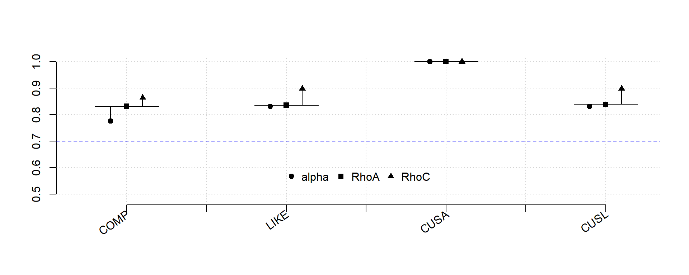

Pacote SEMinR para Estimar Modelos de Equações Estruturais (SEM-PLS)
Partial Least Squares Structural Equation Modeling (PLS-SEM) Using R
1 SEMinR
O SEMinR é um pacote de software desenvolvido para o ambiente estatístico R, que traz uma sintaxe amigável para criar e estimar modelos de equações estruturais (SEM). Ele é open source, o que significa que qualquer pessoa pode inspecionar, modificar e aprimorar o código-fonte. O SEMinR é distribuído sob a Licença Pública Geral GNU versão 3 (GPL-3), permitindo seu uso gratuito para fins pessoais, acadêmicos e comerciais, desde que qualquer alteração ou aplicação derivada também seja de código aberto.
O SEMinR está hospedado no GitHub, onde os usuários são incentivados a seguir a página e contribuir para o projeto, além de reportar problemas por meio do recurso de issues. Há também um grupo no Facebook onde os desenvolvedores e usuários discutem novidades, práticas recomendadas e tutoriais sobre o SEMinR.
A sintaxe do SEMinR permite que profissionais apliquem modelos PLS-SEM (Modelagem de Equações Estruturais com Mínimos Quadrados Parciais) com uma terminologia familiar, como reflexivos, compostos e interações, sem a necessidade de especificar matrizes subjacentes. O pacote suporta tanto PLS-SEM quanto SEM baseado em covariâncias (CB-SEM), e integra-se com o pacote lavaan para a estimativa CB-SEM.
O desenvolvimento do SEMinR está em constante melhoria, incorporando novos métodos e oferecendo opções úteis de relatórios. Para usar o SEMinR, é necessário instalá-lo no RStudio, sendo recomendada a atualização para a versão mais recente do R e RStudio, se necessário.
O processo para especificar e estimar um modelo de equações estruturais no SEMinR envolve quatro etapas principais:
- Carregar e limpar os dados: Importar os dados e realizar qualquer limpeza necessária para garantir que estejam prontos para análise.
- Especificar os modelos de mensuração: Definir os construtos e como eles serão medidos, como no exemplo do modelo de reputação corporativa.
- Especificar o modelo estrutural: Estabelecer as relações entre os construtos, identificando quais são os exógenos e endógenos.
- Estimar, realizar o bootstrap e resumir o modelo: Estimar o modelo, aplicar o bootstrap para validar os resultados e gerar um resumo da análise.
1.1 Carregando e Limpando os Dados
Os arquivos CSV (Comma-Separated Values) são arquivos de texto onde cada linha representa os dados de um sujeito, com valores correspondentes a variáveis separadas por vírgulas ou outros caracteres, como ponto e vírgula. A primeira linha geralmente contém os nomes das variáveis (linha de cabeçalho). Para carregar um arquivo CSV no R, utiliza-se a função read.csv(), e a documentação pode ser acessada com ?read.csv.
# Instalar e Carregar o Pacote
#install.packages("seminr")
library(seminr)
# Importar banco de dados
corp_rep_data <- read.csv(file = "Corporate Reputation Data.csv", header = TRUE, sep = ";")
head(corp_rep_data )| serviceprovider | servicetype | comp_1 | comp_2 | comp_3 | like_1 | like_2 | like_3 | cusl_1 | cusl_2 | cusl_3 | cusa | csor_1 | csor_2 | csor_3 | csor_4 | csor_5 | csor_global | attr_1 | attr_2 | attr_3 | attr_global | perf_1 | perf_2 | perf_3 | perf_4 | perf_5 | perf_global | qual_1 | qual_2 | qual_3 | qual_4 | qual_5 | qual_6 | qual_7 | qual_8 | qual_global | switch_1 | switch_2 | switch_3 | switch_4 |
|---|---|---|---|---|---|---|---|---|---|---|---|---|---|---|---|---|---|---|---|---|---|---|---|---|---|---|---|---|---|---|---|---|---|---|---|---|---|---|---|---|
| 3 | 2 | 4 | 5 | 5 | 3 | 1 | 2 | 5 | 3 | 3 | 5 | 3 | 3 | 3 | 3 | 3 | 3 | 5 | 1 | 3 | 5 | 5 | 4 | 2 | 5 | 6 | 6 | 5 | 6 | 4 | 2 | 4 | 4 | 2 | 5 | 6 | 3 | 1 | 3 | 2 |
| 3 | 2 | 6 | 7 | 6 | 6 | 6 | 6 | 7 | 7 | 7 | 7 | 2 | 5 | 6 | 4 | 6 | 6 | 6 | 6 | 6 | 6 | 6 | 6 | 6 | 6 | 6 | 6 | 6 | 6 | 6 | 6 | 5 | 6 | 6 | 5 | 6 | 5 | 5 | 4 | 4 |
| 3 | 2 | 4 | 5 | 2 | 5 | 5 | 5 | 7 | 7 | 5 | 6 | 3 | 1 | 2 | 2 | 4 | 4 | 5 | 6 | 5 | 6 | 4 | 4 | 2 | 5 | 4 | 5 | 3 | 4 | 3 | 4 | 3 | 5 | 4 | 4 | 5 | 4 | 3 | 2 | 3 |
| 3 | 2 | 6 | 4 | 4 | 6 | 5 | 6 | 7 | 7 | 7 | 6 | 3 | 3 | 5 | 3 | 5 | 5 | 3 | 7 | 5 | 7 | 5 | 5 | 5 | 3 | 6 | 6 | 5 | 6 | 6 | 7 | 5 | 4 | 5 | 6 | 7 | 3 | 4 | 4 | 2 |
| 3 | 2 | 6 | 4 | 6 | 6 | 6 | 7 | 6 | 7 | 7 | 6 | 4 | 3 | 4 | 4 | 4 | 4 | 6 | 6 | 6 | 6 | 5 | 6 | 7 | 6 | 5 | 7 | 6 | 5 | 7 | 7 | 6 | 6 | 6 | 7 | 7 | 5 | 5 | 5 | 4 |
| 3 | 2 | 3 | 4 | 4 | 6 | 7 | 7 | 7 | 7 | 7 | 6 | 3 | 3 | 4 | 3 | 3 | 4 | 4 | 1 | 5 | 5 | 6 | 6 | 4 | 5 | 6 | 6 | 5 | 5 | 5 | 6 | 5 | 6 | 3 | 4 | 6 | 5 | 2 | 4 | 4 |
1.2 Especificando os Modelos de Mensuração
Os modelos de caminho consistem em dois elementos:
- Modelos de mensuração (ou modelos externos): descrevem as relações entre as variáveis latentes e seus indicadores.
- Modelo estrutural (ou modelo interno): descreve as relações entre as variáveis latentes.
Para especificar os modelos de mensuração, baseamo-nos na teoria de mensuração, que é essencial para obter resultados úteis em análises PLS-SEM. A validade das relações estruturais entre os construtos depende da qualidade das medidas dos construtos.
O SEMinR utiliza a função constructs() para especificar a lista de todos os modelos de mensuração dos construtos. Dentro dessa lista, podemos definir diferentes construtos por meio das seguintes funções:
composite(): especifica a mensuração de construtos individuais.interaction_term(): especifica termos de interação.higher_composite(): especifica modelos de componentes hierárquicos (construtos de ordem superior).
Esses elementos são fundamentais para garantir que os modelos de mensuração sejam robustos e confiáveis.
| Argumento | Valor |
|---|---|
| construct_name | O nome do construto a ser criado. |
| item_names | Um vetor com os nomes dos itens, geralmente criado pelas funções multi_items() ou single_item(). |
| weights | Define o modo de estimação para cada modelo de mensuração. - mode_A ou correlation_weights para modelos de mensuração especificados refletivamente. - mode_B ou regression_weights para modelos de mensuração especificados de forma formativa. Mode_A é o valor padrão se os pesos não forem especificado |
| Fonte: Partial LeastSquares Structural Equation Modeling (PLS-SEM) Using R |
A função
constructs()é utilizada para compilar uma lista de construtos e suas definições de modelos de mensuração.Permite a inclusão de diversos construtos, como:
composite(): para construtos compostos.interaction_term(): para termos de interação.higher_composite(): para modelos de hierarquia.
Importante: Nesta fase, não se especifica um conjunto de dados ou um modelo estrutural, permitindo a reutilização do objeto de modelo de mensuração em diferentes contextos.
A Função
composite()define o modelo de mensuração de um único construto e aceita os seguintes argumentos (conforme Tabela 3.3):construct_name: Nome do construto.item_names: Vetor com os nomes dos itens, geralmente criado pormulti_items()ousingle_item().weights: Define o modo de estimação para cada modelo de mensuração.mode_A: Para modelos refletivos (padrão se não especificado).mode_B: Para modelos formativos.
Funções de Especificação
multi_items(): Cria um vetor de múltiplos itens de mensuração com nomes semelhantes.single_item(): Descreve um único item de mensuração.
Exemplos de Uso
- Definindo o Construto Refletivamente Medido COMP:
composite("COMP", multi_items("comp_", 1:3), weights = mode_A)[1] "COMP" "comp_1" "A" "COMP" "comp_2" "A" "COMP" "comp_3"
[9] "A"
attr(,"class")
[1] "character" "construct" "composite"- Definindo o Modelo de Mensuração de Item Único CUSA:
composite("CUSA", single_item("cusa"))[1] "CUSA" "cusa" "A"
attr(,"class")
[1] "character" "construct" "composite"Aqui está um exemplo completo de como utilizar essas funções em um código R:
# 3. Criar o modelo de mensuração
simple_mm <- constructs(
composite("COMP", multi_items("comp_", 1:3)),
composite("LIKE", multi_items("like_", 1:3)),
composite("CUSA", single_item("cusa")),
composite("CUSL", multi_items("cusl_", 1:3))
)
# Verificar o modelo de mensuração
print(simple_mm )$composite
[1] "COMP" "comp_1" "A" "COMP" "comp_2" "A" "COMP" "comp_3"
[9] "A"
attr(,"class")
[1] "character" "construct" "composite"
$composite
[1] "LIKE" "like_1" "A" "LIKE" "like_2" "A" "LIKE" "like_3"
[9] "A"
attr(,"class")
[1] "character" "construct" "composite"
$composite
[1] "CUSA" "cusa" "A"
attr(,"class")
[1] "character" "construct" "composite"
$composite
[1] "CUSL" "cusl_1" "A" "CUSL" "cusl_2" "A" "CUSL" "cusl_3"
[9] "A"
attr(,"class")
[1] "character" "construct" "composite"
attr(,"class")
[1] "list" "measurement_model" "seminr_model" Esse código cria um objeto chamado measurement_model, que contém os modelos de mensuração para os construtos COMP, CUSA, LIKE e CUSL, prontos para uso em uma análise PLS-SEM.
1.3 Especificação do Modelo Estrutural em SEMinR
Após a definição do modelo de mensuração, o próximo passo é especificar o modelo estrutural. Dois aspectos principais devem ser considerados:
- Sequência dos Construtos: A ordem em que os construtos são organizados no modelo.
- Relacionamentos entre Construtos: As interações que existem entre eles, fundamentais para a formulação de hipóteses e para a teoria sendo testada.
1.3.1 Tipos de Relacionamentos
- Relações Lineares Independentes: Relacionamentos entre construtos que são diretos e unidimensionais.
- Mediação: Um construto atua como mediador entre outro construto e um resultado.
- Moderação: Um construto influencia a relação entre dois outros construtos.
SEMinR utiliza as seguintes funções para tornar a especificação do modelo estrutural mais clara e intuitiva:
relationships(): Especifica todos os relacionamentos estruturais entre os construtos.paths(): Define as relações entre conjuntos de antecedentes e resultados.
Para o modelo simples, que envolve relacionamentos entre os construtos COMP, LIKE, CUSA e CUSL, você pode definir os relacionamentos da seguinte forma:
# Criar o modelo estrutural
simple_sm <- relationships(
paths(from = c("COMP", "LIKE"), to = c("CUSA", "CUSL")),
paths(from = c("CUSA"), to = c("CUSL"))
)
simple_sm source target
[1,] "COMP" "CUSA"
[2,] "LIKE" "CUSA"
[3,] "COMP" "CUSL"
[4,] "LIKE" "CUSL"
[5,] "CUSA" "CUSL"
attr(,"class")
[1] "matrix" "array" "structural_model" "seminr_model" - Reusabilidade: O objeto
simple_smpode ser reutilizado em diferentes conjuntos de dados e modelos de mensuração, uma vez que a especificação do modelo estrutural não requer um conjunto de dados ou um modelo de mensuração neste estágio. - Modelo Leigo: A sintaxe utilizada no SEMinR visa ser acessível e alinhada com a terminologia comum no campo de modelagem estrutural.
1.4 Estimativa do Modelo em SEMinR
Após especificar os modelos de mensuração e estrutural, o próximo passo é a estimativa do modelo usando o algoritmo PLS-SEM. Esse processo envolve a determinação das pontuações dos construtos, que serão utilizadas como entrada para os modelos de regressão parciais dentro do modelo de caminho. Uma vez que o algoritmo calcula as pontuações dos construtos, essas pontuações são usadas para estimar cada modelo de regressão parcial, resultando nas estimativas para todos os relacionamentos nos modelos de mensuração (pesos/loads dos indicadores) e no modelo estrutural (coeficientes de caminho).
1.4.1 Modelos de Mensuração
A configuração dos modelos de mensuração depende de como cada construto é modelado:
- Modelos Reflexivos: Para construtos modelados como reflexivos, as cargas dos indicadores são geralmente estimadas através do modo A, utilizando regressões bivariadas. Nesse caso, a pontuação do construto é a variável independente, enquanto cada indicador é a variável dependente.
- Modelos Formativos: Para construtos modelados como formativos, os pesos dos indicadores são estimados usando múltiplas regressões (modo B). Aqui, o construto é a variável dependente e os indicadores são as variáveis independentes.
Embora a abordagem padrão utilize modo A para modelos reflexivos e modo B para modelos formativos, os pesquisadores podem optar por um modo diferente em situações especiais.
Os cálculos do modelo estrutural são realizados conforme descrito abaixo: - Modelos de Regressão Parcial: Cada construto endógeno é considerado como a variável dependente em um modelo de regressão, com seus precursores diretos (construtos latentes com relação direta) como variáveis independentes. Assim, há um modelo de regressão parcial para cada construto endógeno, permitindo a estimativa de todos os coeficientes de caminho no modelo estrutural.
1.4.2 Procedimentos Iterativos do Algoritmo PLS-SEM
O algoritmo PLS-SEM executa a estimativa através de dois estágios:
- Estimativa das Pontuações dos Construtos: No primeiro estágio, as pontuações dos construtos são estimadas.
- Cálculo Final dos Pesos dos Indicadores: No segundo estágio, as estimativas finais dos pesos e cargas dos indicadores, bem como os coeficientes de caminho do modelo estrutural e os valores de ( R^2 ) dos construtos latentes endógenos, são calculados.
1.4.3 Configurações do Algoritmo para Estimativa do Modelo PLS
Para estimar um modelo de caminho PLS, deve-se selecionar opções algorítmicas e configurações de argumentos. As principais configurações incluem:
inner_weights: Esquema de ponderação para a estimativa do caminho. Pode ser escolhido entrepath_weighting(default) oupath_factorial.missing: Declara qual esquema de valores ausentes deve ser utilizado. O padrão émean_replacement.missing_value: Indica o valor a ser usado para denotar valores ausentes nos dados, sendoNAo padrão.maxIt: Número máximo de iterações para a estimativa do modelo PLS, com um padrão de 300.stopCriterion: Muda o peso/carga do indicador entre iterações consecutivas, definido como 7 (10⁻⁷).
| Argumento | Valor |
|---|---|
| data | O conjunto de dados contendo os dados dos indicadores |
| measurement_model | O modelo de mensuração descrito pela função constructs() |
| structural_model | O modelo estrutural descrito pela função paths() |
| inner_weights | O esquema de ponderação para a estimativa do caminho (pode ser path_weighting ou path_factorial) |
| missing | Esquema a ser usado para substituir valores ausentes (default: mean_replacement) |
| missing_value | Valor usado para indicar valores ausentes nos dados (default: NA) |
| maxIt | Número máximo de iterações ao estimar o modelo PLS (default: 300) |
| stopCriterion | Mínima mudança nas cargas dos indicadores entre iterações (default: 7) |
| Fonte: Partial LeastSquares Structural Equation Modeling (PLS-SEM) Using R |
Essa tabela fornece uma visão geral dos principais argumentos que podem ser ajustados na função de estimativa do modelo PLS em SEMinR, permitindo que os pesquisadores personalizem suas análises conforme necessário.
Para estimar o modelo PLS-SEM usando a função estimate_pls() no R, você deve garantir que os modelos de mensuração e estrutural já estejam definidos e que o conjunto de dados esteja pronto. Aqui está um exemplo de como isso pode ser feito, com explicações sobre cada parte do código:
O Código R para Estimar o Modelo PLS-SEM
# Estimar o modelo PLS-SEM
corp_rep_simple_model <- estimate_pls(
data = corp_rep_data,
measurement_model = simple_mm,
structural_model = simple_sm,
missing_value = "-99" # Usar aspas retas
)Explicações dos Argumentos:
- data: O conjunto de dados (
corp_rep_data) que contém os dados dos indicadores. - measurement_model: O modelo de mensuração (
simple_mm) que foi definido anteriormente com a funçãoconstructs(). - structural_model: O modelo estrutural (
simple_sm) que foi definido anteriormente com a funçãorelationships(). - inner_weights: Define o esquema de ponderação a ser utilizado para a estimativa do caminho; neste caso, estamos usando
path_weighting. - missing: Esquema para lidar com valores ausentes, neste caso, a substituição pela média (
mean_replacement). - missing_value: Valor utilizado no conjunto de dados para indicar valores ausentes; aqui, o código
-99é usado.
Uma vez que o modelo foi estimado, podemos resumir os resultados e gerar um relatório utilizando a função summary(). Essa função é usada para extrair as saídas e parâmetros de importância de um modelo estimado. O pacote SEMinR oferece suporte ao uso de summary() para as funções estimate_pls(), bootstrap_model(), e predict_pls().
Ao aplicar a função summary() em um objeto de modelo SEMinR, ela produz um objeto da classe summary.seminr_model. Esse objeto pode ser armazenado em uma variável e contém várias subestruturas de dados que fornecem informações detalhadas sobre o modelo estimado. A tabela a seguir lista os elementos presentes no objeto summary.seminr_model:
| Sub-Objeto | Descrição |
|---|---|
| $meta | A função de estimação e informações da versão |
| $iterations | O número de iterações para o algoritmo PLS-SEM convergir |
| $paths | Os coeficientes de caminho do modelo e os valores de R² (ajustados) |
| $total_effects | Os efeitos totais do modelo |
| $total_indirect_effects | Os efeitos indiretos totais do modelo |
| $loadings | As cargas dos indicadores para todos os construtos |
| $weights | Os pesos dos indicadores para todos os construtos |
| $validity | As métricas necessárias para avaliar a validade das medidas dos construtos |
| $reliability | As métricas necessárias para avaliar a confiabilidade das medidas dos construtos |
| $composite_scores | As pontuações estimadas para os construtos |
| $vif_antecedents | As métricas usadas para avaliar a colinearidade do modelo estrutural |
| $fSquare | A métrica f² para todas as relações do modelo estrutural |
| $descriptives | As estatísticas descritivas dos dados dos indicadores |
| $it_criteria | Os critérios de seleção de modelo com base em informações teóricas para o modelo estimado |
O objeto summary.seminr_model é fundamental para a análise dos resultados após a estimação do modelo PLS-SEM, proporcionando uma visão abrangente da qualidade e desempenho do modelo.
Você pode usar o operador $ para acessar os sub-objetos do modelo estimado, conforme descrito na Tabela 3. Aqui está um exemplo de como você pode inspecionar cada um dos sub-objetos no seu modelo corp_rep_simple_model após a estimativa do modelo PLS-SEM. O código a seguir mostra como fazer isso em R:
# Resumir os resultados do modelo
summary_simple_corp_rep <- summary(corp_rep_simple_model)
summary_simple_corp_rep
Results from package seminr (2.3.4)
Path Coefficients:
CUSA CUSL
R^2 0.295 0.562
AdjR^2 0.290 0.558
COMP 0.162 0.009
LIKE 0.424 0.342
CUSA . 0.504
Reliability:
alpha rhoC AVE rhoA
COMP 0.776 0.865 0.681 0.832
LIKE 0.831 0.899 0.747 0.836
CUSA 1.000 1.000 1.000 1.000
CUSL 0.831 0.899 0.748 0.839
Alpha, rhoC, and rhoA should exceed 0.7 while AVE should exceed 0.5# Inspecionar os coeficientes de caminho do modelo e os valores de R²
summary_simple_corp_rep$paths CUSA CUSL
R^2 0.295 0.562
AdjR^2 0.290 0.558
COMP 0.162 0.009
LIKE 0.424 0.342
CUSA . 0.504# Inspecionar as métricas de confiabilidade dos construtos
summary_simple_corp_rep$reliability alpha rhoC AVE rhoA
COMP 0.776 0.865 0.681 0.832
LIKE 0.831 0.899 0.747 0.836
CUSA 1.000 1.000 1.000 1.000
CUSL 0.831 0.899 0.748 0.839
Alpha, rhoC, and rhoA should exceed 0.7 while AVE should exceed 0.5Aqui está uma explicação da seção sobre bootstrapping do modelo PLS-SEM, incluindo detalhes sobre a função bootstrap_model() e como utilizá-la no R.
1.5 Bootstrapping do Modelo
O bootstrapping é uma técnica estatística não paramétrica utilizada para estimar erros padrão e intervalos de confiança em modelos. Para modelos PLS-SEM, essa abordagem é essencial, uma vez que o método não faz suposições paramétricas.
A função bootstrap_model() do pacote SEMinR é usada para realizar bootstrapping em um modelo PLS-SEM previamente estimado. Esta função suporta processamento paralelo, o que significa que pode utilizar múltiplos núcleos do processador, aumentando a eficiência do cálculo.
seminr_model: O modelo estimado anteriormente (no seu caso,corp_rep_simple_model).nboot: O número de subsamples bootstrap a serem gerados. Neste exemplo, você usará1000, mas recomenda-se usar10000para resultados mais robustos.cores: O número de núcleos a serem utilizados para o processamento paralelo. SeNULL, o pacote usará todos os núcleos disponíveis.seed: Um valor de semente para garantir a reprodutibilidade dos resultados.
Um exemplo de como você pode realizar o bootstrapping do seu modelo:
# Executar o bootstrapping do modelo
boot_simple_corp_rep <- bootstrap_model(
seminr_model = corp_rep_simple_model,
nboot = 1000,
cores = NULL,
seed = 123
)
# Armazenar o resumo do modelo bootstrapped
sum_boot_simple_corp_rep <- summary(boot_simple_corp_rep) #
sum_boot_simple_corp_rep
Results from Bootstrap resamples: 1000
Bootstrapped Structural Paths:
Original Est. Bootstrap Mean Bootstrap SD T Stat. 2.5% CI
COMP -> CUSA 0.162 0.166 0.068 2.374 0.038
COMP -> CUSL 0.009 0.011 0.056 0.165 -0.098
LIKE -> CUSA 0.424 0.422 0.062 6.858 0.299
LIKE -> CUSL 0.342 0.340 0.056 6.059 0.227
CUSA -> CUSL 0.504 0.504 0.042 11.978 0.419
97.5% CI
COMP -> CUSA 0.298
COMP -> CUSL 0.126
LIKE -> CUSA 0.542
LIKE -> CUSL 0.450
CUSA -> CUSL 0.585
Bootstrapped Weights:
Original Est. Bootstrap Mean Bootstrap SD T Stat. 2.5% CI
comp_1 -> COMP 0.536 0.538 0.043 12.381 0.466
comp_2 -> COMP 0.340 0.341 0.030 11.264 0.279
comp_3 -> COMP 0.328 0.326 0.032 10.290 0.264
like_1 -> LIKE 0.418 0.420 0.020 21.072 0.380
like_2 -> LIKE 0.378 0.377 0.018 21.387 0.343
like_3 -> LIKE 0.360 0.359 0.020 18.086 0.321
cusa -> CUSA 1.000 1.000 0.000 . 1.000
cusl_1 -> CUSL 0.369 0.369 0.016 23.430 0.338
cusl_2 -> CUSL 0.420 0.421 0.015 28.948 0.395
cusl_3 -> CUSL 0.365 0.365 0.015 24.381 0.335
97.5% CI
comp_1 -> COMP 0.640
comp_2 -> COMP 0.397
comp_3 -> COMP 0.384
like_1 -> LIKE 0.461
like_2 -> LIKE 0.414
like_3 -> LIKE 0.398
cusa -> CUSA 1.000
cusl_1 -> CUSL 0.401
cusl_2 -> CUSL 0.452
cusl_3 -> CUSL 0.393
Bootstrapped Loadings:
Original Est. Bootstrap Mean Bootstrap SD T Stat. 2.5% CI
comp_1 -> COMP 0.858 0.858 0.021 41.366 0.813
comp_2 -> COMP 0.798 0.797 0.029 27.709 0.730
comp_3 -> COMP 0.818 0.814 0.031 26.246 0.746
like_1 -> LIKE 0.879 0.880 0.017 51.088 0.843
like_2 -> LIKE 0.870 0.869 0.018 47.428 0.830
like_3 -> LIKE 0.843 0.842 0.020 41.417 0.799
cusa -> CUSA 1.000 1.000 0.000 . 1.000
cusl_1 -> CUSL 0.833 0.832 0.024 35.331 0.780
cusl_2 -> CUSL 0.917 0.917 0.010 88.874 0.894
cusl_3 -> CUSL 0.843 0.842 0.023 37.134 0.793
97.5% CI
comp_1 -> COMP 0.895
comp_2 -> COMP 0.843
comp_3 -> COMP 0.866
like_1 -> LIKE 0.910
like_2 -> LIKE 0.900
like_3 -> LIKE 0.879
cusa -> CUSA 1.000
cusl_1 -> CUSL 0.874
cusl_2 -> CUSL 0.935
cusl_3 -> CUSL 0.881
Bootstrapped HTMT:
Original Est. Bootstrap Mean Bootstrap SD 2.5% CI 97.5% CI
COMP -> LIKE 0.780 0.782 0.041 0.702 0.858
COMP -> CUSA 0.465 0.467 0.060 0.350 0.580
COMP -> CUSL 0.532 0.534 0.059 0.419 0.649
LIKE -> CUSA 0.577 0.577 0.044 0.485 0.657
LIKE -> CUSL 0.737 0.736 0.041 0.655 0.814
CUSA -> CUSL 0.755 0.755 0.034 0.689 0.817
Bootstrapped Total Paths:
Original Est. Bootstrap Mean Bootstrap SD 2.5% CI 97.5% CI
COMP -> CUSA 0.162 0.166 0.068 0.038 0.298
COMP -> CUSL 0.091 0.095 0.068 -0.037 0.228
LIKE -> CUSA 0.424 0.422 0.062 0.299 0.542
LIKE -> CUSL 0.556 0.554 0.062 0.433 0.670
CUSA -> CUSL 0.504 0.504 0.042 0.419 0.585# Inspecionar os caminhos estruturais bootstrapped
bootstrapped_paths <- sum_boot_simple_corp_rep$bootstrapped_paths
print(bootstrapped_paths) Original Est. Bootstrap Mean Bootstrap SD T Stat. 2.5% CI
COMP -> CUSA 0.162 0.166 0.068 2.374 0.038
COMP -> CUSL 0.009 0.011 0.056 0.165 -0.098
LIKE -> CUSA 0.424 0.422 0.062 6.858 0.299
LIKE -> CUSL 0.342 0.340 0.056 6.059 0.227
CUSA -> CUSL 0.504 0.504 0.042 11.978 0.419
97.5% CI
COMP -> CUSA 0.298
COMP -> CUSL 0.126
LIKE -> CUSA 0.542
LIKE -> CUSL 0.450
CUSA -> CUSL 0.585# Inspecionar as cargas dos indicadores bootstrapped
bootstrapped_loadings <- sum_boot_simple_corp_rep$bootstrapped_loadings
print(bootstrapped_loadings) Original Est. Bootstrap Mean Bootstrap SD T Stat. 2.5% CI
comp_1 -> COMP 0.858 0.858 0.021 41.366 0.813
comp_2 -> COMP 0.798 0.797 0.029 27.709 0.730
comp_3 -> COMP 0.818 0.814 0.031 26.246 0.746
like_1 -> LIKE 0.879 0.880 0.017 51.088 0.843
like_2 -> LIKE 0.870 0.869 0.018 47.428 0.830
like_3 -> LIKE 0.843 0.842 0.020 41.417 0.799
cusa -> CUSA 1.000 1.000 0.000 . 1.000
cusl_1 -> CUSL 0.833 0.832 0.024 35.331 0.780
cusl_2 -> CUSL 0.917 0.917 0.010 88.874 0.894
cusl_3 -> CUSL 0.843 0.842 0.023 37.134 0.793
97.5% CI
comp_1 -> COMP 0.895
comp_2 -> COMP 0.843
comp_3 -> COMP 0.866
like_1 -> LIKE 0.910
like_2 -> LIKE 0.900
like_3 -> LIKE 0.879
cusa -> CUSA 1.000
cusl_1 -> CUSL 0.874
cusl_2 -> CUSL 0.935
cusl_3 -> CUSL 0.881- Tempo de Execução: O bootstrapping pode levar algum tempo, especialmente se o número de subsamples for elevado (como 10,000). O R pode parecer estar inativo durante esse processo, mas é normal.
- Interpretação dos Resultados: Os resultados do bootstrapping fornecerão erros padrão e intervalos de confiança para os coeficientes de caminho, ajudando a avaliar a significância estatística das relações entre os construtos.
Essa abordagem de bootstrapping é crucial para a validade dos resultados obtidos no modelo PLS-SEM, permitindo uma análise mais robusta e confiável.
1.6 Exportação de Resultados e Gráficos do SEMinR
Após a estimativa, avaliação e análise do modelo, muitas vezes é necessário exportar os resultados gerados no R para um relatório, como um documento do Apache OpenOffice Writer (.odt) ou uma apresentação do Microsoft PowerPoint (.ppt ou .pptx). Ao longo deste livro, fornecemos capturas de tela para demonstrar as saídas do código no console do RStudio. No entanto, não recomendamos o uso desse método para copiar e colar resultados em relatórios ou artigos de pesquisa. Em vez disso, recomendamos exportar tabelas e matrizes para arquivos .csv, que podem ser importados para documentos ou apresentações, e que figuras sejam exportadas para arquivos .pdf para garantir a melhor qualidade de impressão.
1.6.1 Exportando os Carregamentos Bootstrap para um Arquivo CSV
Depois de escrever os carregamentos bootstrap em um arquivo CSV, você pode usar o seguinte código em R:
# Escrever o objeto de caminhos bootstrap em um arquivo CSV
write.csv(x = sum_boot_simple_corp_rep$bootstrapped_loadings,
file = "boot_loadings.csv")Uma vez que o arquivo boot_loadings.csv foi salvo no diretório de trabalho, você pode abri-lo com o Apache OpenOffice Calc, Microsoft Excel ou outro software de planilha. Esses aplicativos permitem a formatação e edição da tabela para produzir tabelas de alta qualidade em relatórios.
1.6.2 Gerando Gráficos de Alta Qualidade
Para gerar gráficos a partir dos resultados do SEMinR, siga os passos abaixo:
Use a função plot() para visualizar as confiabilidades internas dos construtos, como Cronbach’s alpha, rhoA e rhoC.
# Gerar um gráfico da confiabilidade dos construtos
plot(summary_simple_corp_rep$reliability)
Ao seguir esses passos, você garantirá que seus resultados e gráficos estejam prontos para serem incluídos em documentos e relatórios de forma profissional e com alta qualidade de impressão.
2 Referência
HAIR, J. F. et al.Partial least squares structural equation modeling (PLS-SEM) using R : a workbook. Cham, Switzerland: Springer, 2021.